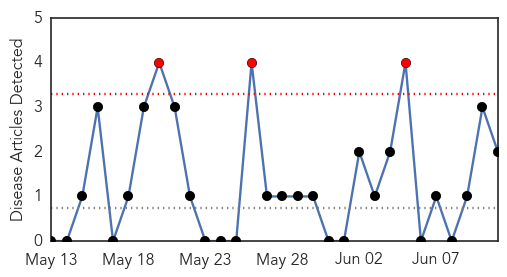
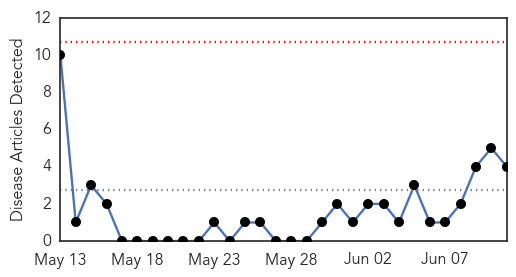

Chikungunya
30-Day Web Trend
3 alerts, 0 warnings

30-Day Twitter Trend
0 alerts, 0 warnings

Article Locations
Article Confidences

Top Articles:
Top Tweets:
-
No tweets found for Jun 11, 2015
Swine Flu
30-Day Web Trend
0 alerts, 0 warnings

30-Day Twitter Trend
2 alerts, 0 warnings

Article Locations

Article Confidences

Top Articles:
- 0.772
- Boy, 12, wins £120,000 in damages after swine-flu jab left him 'severely disabled' by narcolepsy
- 0.755
- Boy Wins 120,000 Pounds Damages for Narcolepsy Caused by Swine Flu Vaccine
- 0.737
- Boy disabled by swine flu Pandemrix jab wins £120k compensation
- 0.735
- Blame game and confusion fuel panic in South Korea - Regional
Top Tweets:
-
No tweets found for Jun 11, 2015